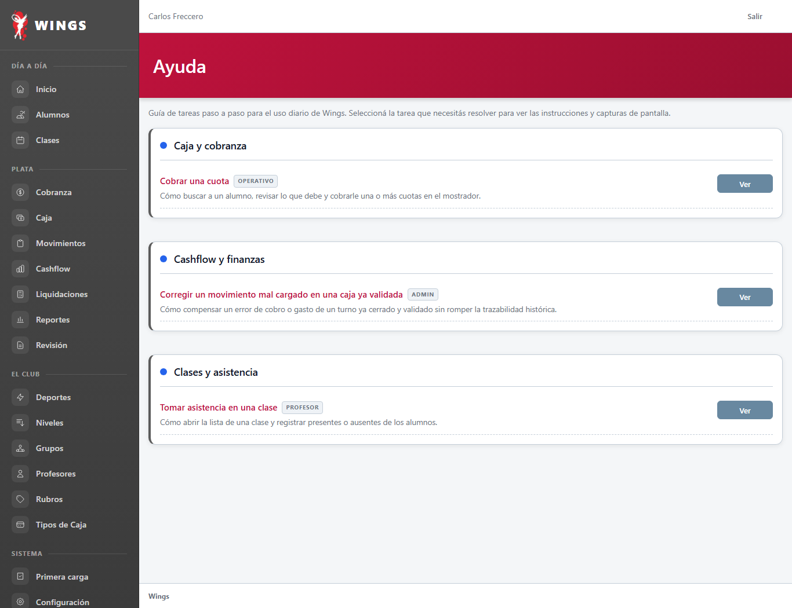
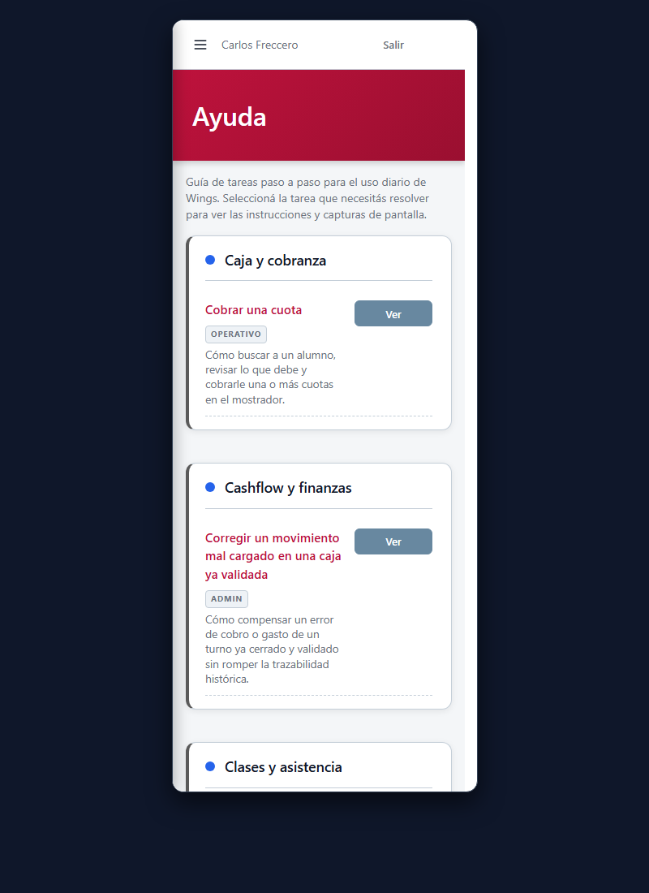
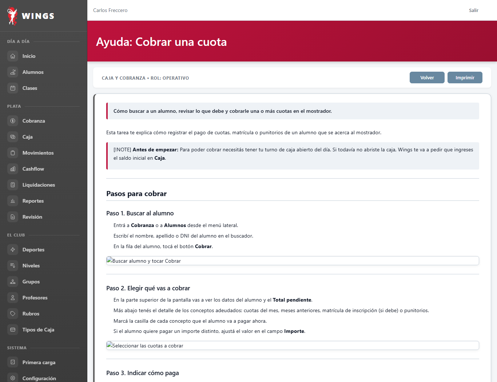
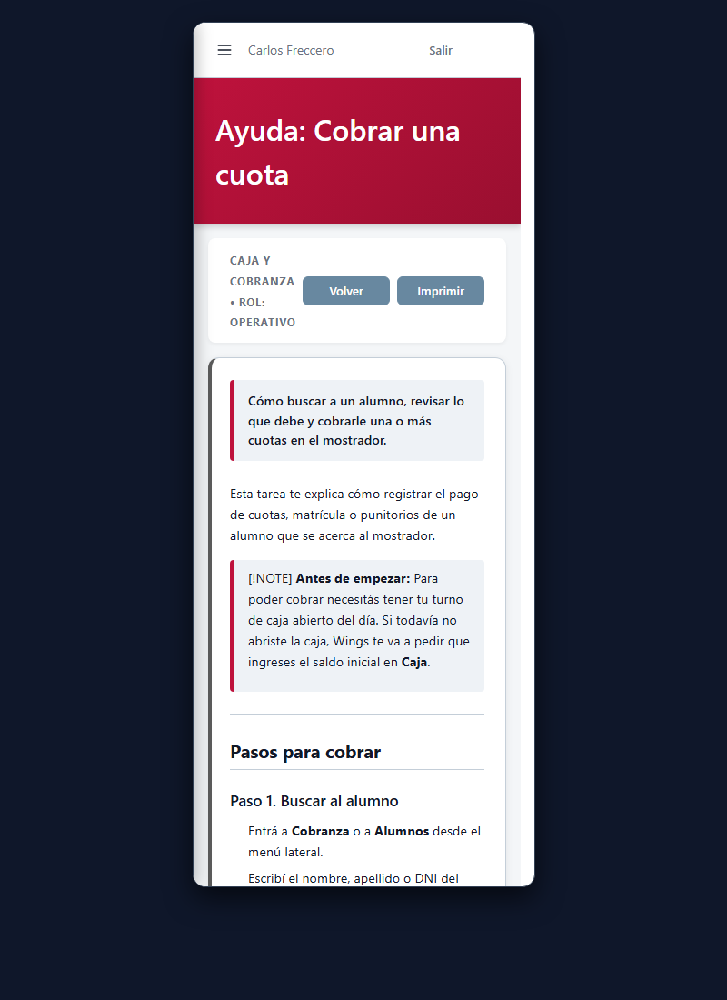
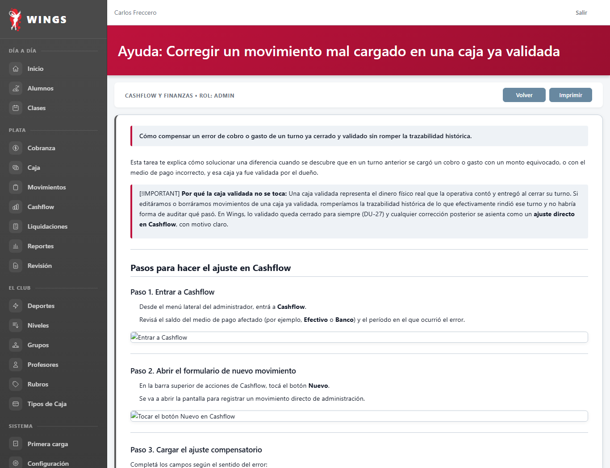
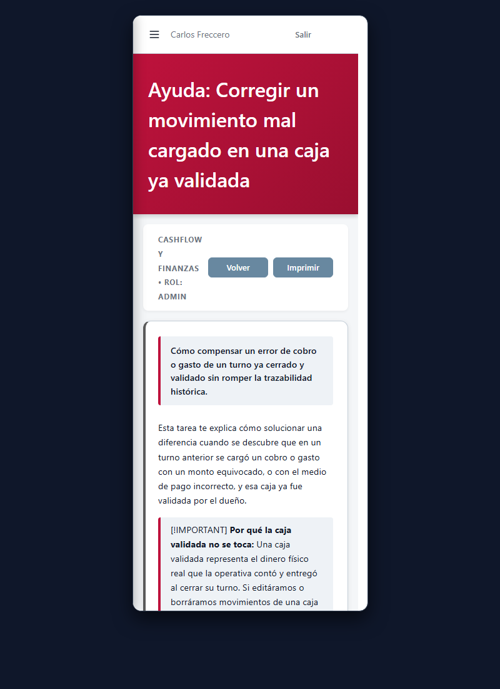
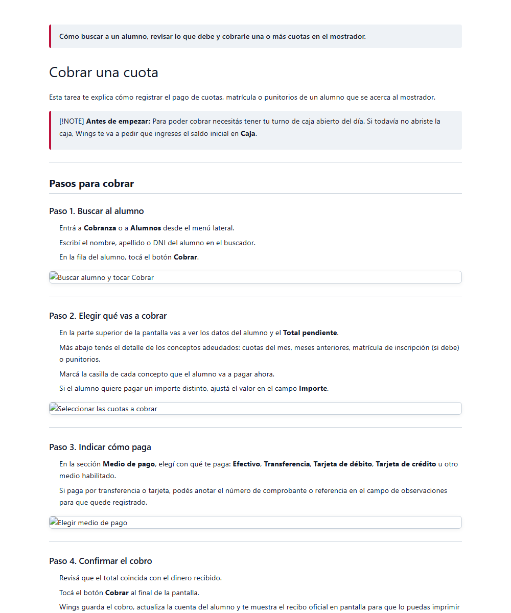
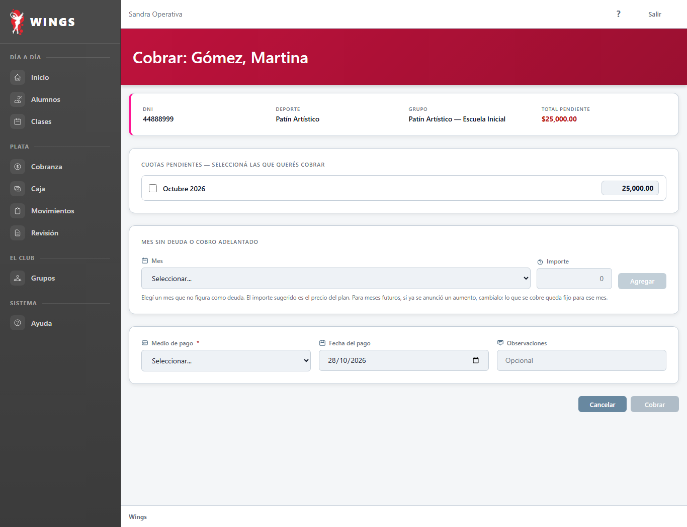
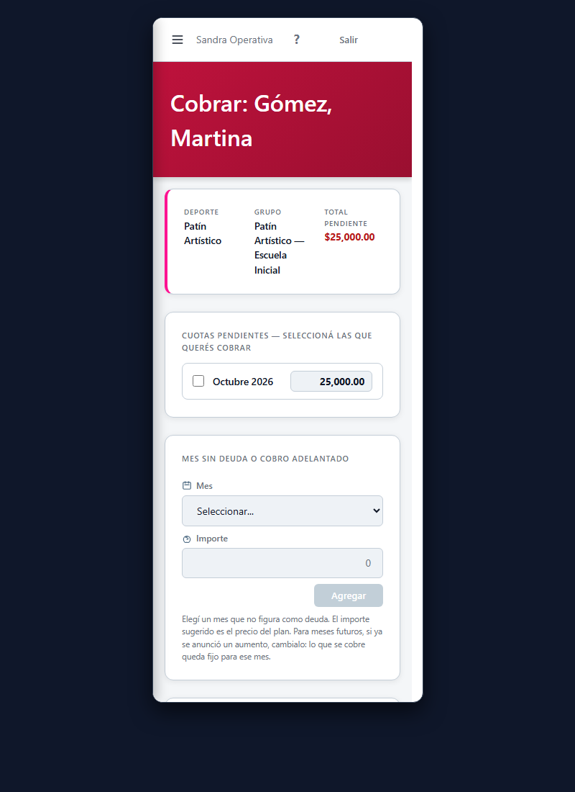

T12 y T13 — Manual del usuario y Ayuda dentro de Wings
Etapa 1: Estructura mínima, dos páginas de muestra y lista completa de páginas.
28/10/2026 · Implementación Gemini CyE · Capturas reales en Chrome headless a 1366 px y marco de 375 px.
- Estructura en dos etapas: Primero se presenta la estructura mínima, las dos muestras y la lista de páginas, y se frena para el OK de Carlos. Solo con su visto bueno se continúa con la Etapa 2.
- Ubicación del contenido: Los textos viven en archivos Markdown independientes (
resources/manual/{rol}/{slug}.md) administrados porManualService, permitiendo agregar o modificar guías sin tocar código de vistas. - Menú y acceso: Entrada «Ayuda» en el grupo Sistema del menú lateral para cada rol. Control estricto de acceso (Admin ve todo; Operativo ve operativo; Profesor ve profesor; forzar URL ajena devuelve 403; sin sesión redirige a login).
- Signo de pregunta (?): Botón con formato canónico en la barra superior (topbar) de cada pantalla que tenga guía asociada, abriendo directamente su página del manual.
- Impresión: Botón Imprimir que ejecuta la impresión limpia con estilos
@media print, ocultando menú lateral, cabeceras y botoneras para entregar un documento prolijo. - Redacción: Castellano rioplatense, de vos, frases cortas, botones y campos en negrita, sin tecnicismos y con apartado «Qué hago si…».
1. Índice general de Ayuda (/ayuda) T13 Menú e Índice
Accesible desde «Ayuda» en el grupo Sistema del menú lateral. Agrupa las guías por categoría funcional y filtra según los permisos del rol del usuario autenticado (el administrador visualiza las guías de todos los roles identificadas por etiqueta; la operativa y los profesores ven únicamente su área de trabajo).




2. Muestra 1 (Operativa): «Cobrar una cuota» Muestra T12
Guía paso a paso de la tarea principal de mostrador: buscar al alumno, revisar lo adeudado, marcar conceptos, seleccionar medio de pago y confirmar para emitir el recibo. Incluye apartado «Qué hago si…» resolviendo pagos parciales, errores de carga y cajas sin abrir.




3. Muestra 2 (Dueño): «Corregir un movimiento mal cargado en una caja ya validada» DU-27
Guía para el administrador explicando el fundamento contable: por qué una caja validada nunca se reabre ni se modifica (para no romper la trazabilidad del arqueo físico de ese turno) y cómo realizar un ajuste directo en Cashflow con motivo obligatorio para corregir el saldo contable.




4. Vista de impresión limpia @media print
Al tocar el botón Imprimir (o con Ctrl+P), la hoja se renderiza sin la barra de navegación lateral, sin el menú superior y sin los botones de interfaz, imprimiendo exclusivamente el título de la tarea, el contenido didáctico, las capturas y las resoluciones de dudas.


5. Signo de pregunta [?] en la pantalla de la tarea T13 Navegación contextual
El botón ? se sitúa en la barra superior (topbar) junto al botón de Salir, accesible tanto en escritorio como en celular. Al tocarlo abre directamente la página de ayuda correspondiente a la tarea activa (en Cobrar abre cobrar-cuota; en Cashflow abre corregir-movimiento-caja-validada).



